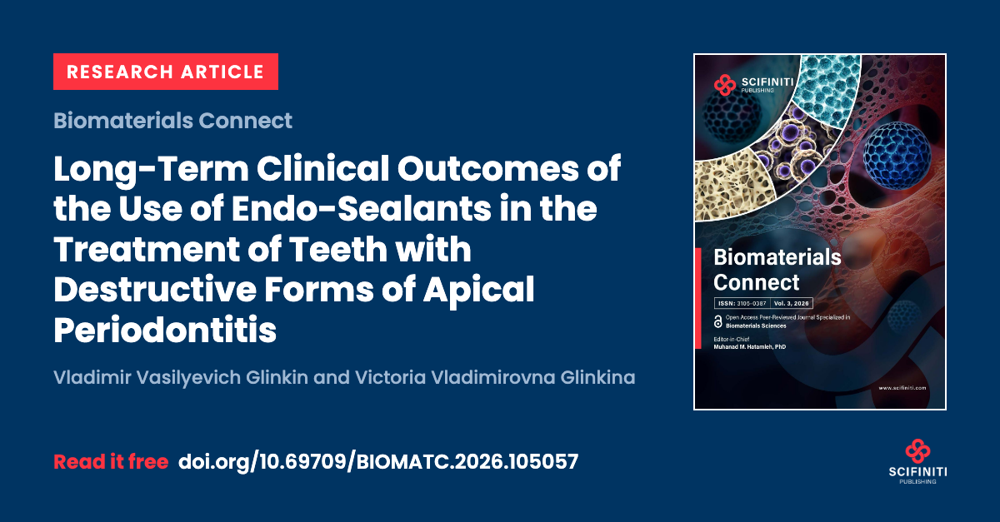
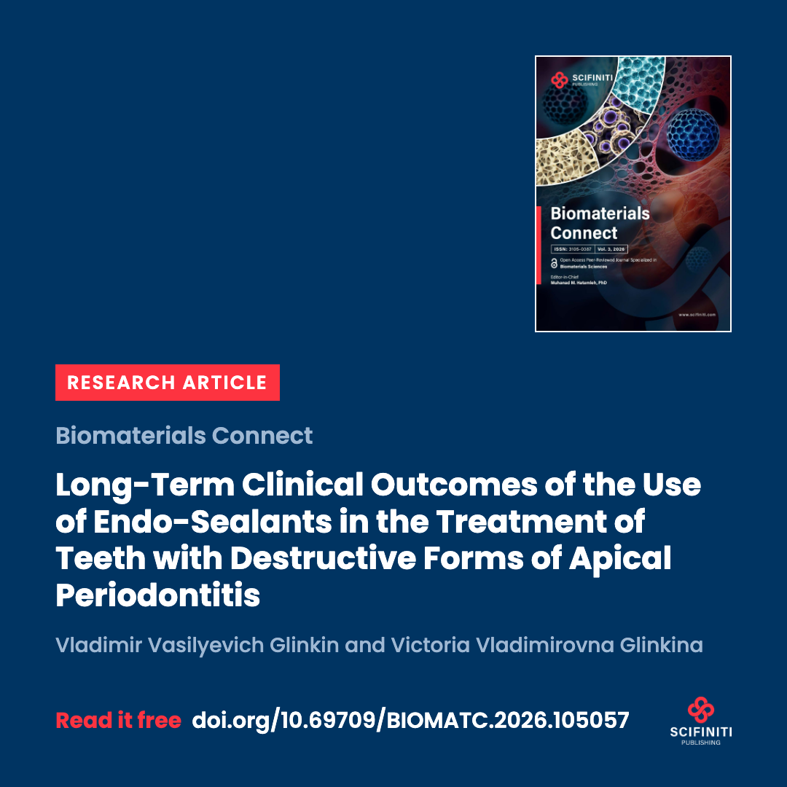
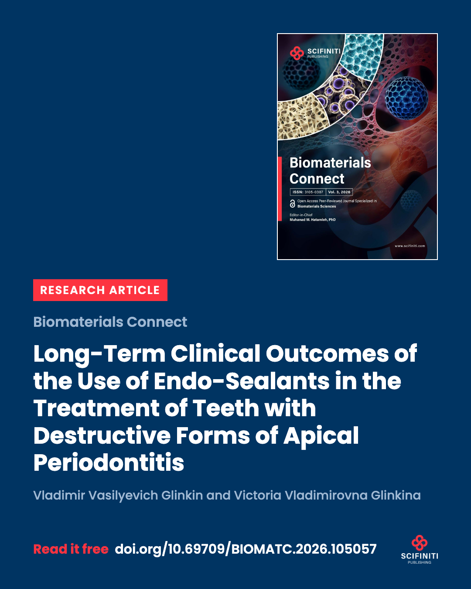

Long-Term Clinical Outcomes of the Use of Endo-Sealants in the Treatment of Teeth with Destructive Forms of Apical Periodontitis
Open access under CC BY 4.0Thank you
Thank you for publishing your work in Biomaterials Connect, and congratulations to you and your co-authors. Your certificate comes with your publication email.
This page belongs to the article, so every co-author can use it. Send it to them so each of you can share the article with your own network.
Share your article
The images and captions below are ready to use. Post when the article comes out, again in the first week, and then once a month with a new caption.
Images to download






These images and the article's figures are published under CC BY 4.0: you may use and adapt them, with credit to the article.
Captions to copy
Our new research article is published in Biomaterials Connect: “Long-Term Clinical Outcomes of the Use of Endo-Sealants in the Treatment of Teeth with Destructive Forms of Apical Periodontitis”. It is open access, free to read and download: https://doi.org/10.69709/BIOMATC.2026.105057 Thank you to all co-authors and to the journal's editors and reviewers. #ApicalPeriodontitis #RadiographicExamination #PeriapicalIndex
Our new research article in Biomaterials Connect: “Long-Term Clinical Outcomes of the Use of Endo-Sealants in the Treatment of Teeth with Destructive Forms of Apical Periodontitis”. Open access: https://doi.org/10.69709/BIOMATC.2026.105057 #ApicalPeriodontitis
Our new research article is out in Biomaterials Connect: “Long-Term Clinical Outcomes of the Use of Endo-Sealants in the Treatment of Teeth with Destructive Forms of Apical Periodontitis”. It is open access, so anyone can read it here: https://doi.org/10.69709/BIOMATC.2026.105057
Our article “Long-Term Clinical Outcomes of the Use of Endo-Sealants in the Treatment of Teeth with Destructive Forms of Apical Periodontitis” is now published in Biomaterials Connect. It is free to read here: https://doi.org/10.69709/BIOMATC.2026.105057
Next months
Published last month in Biomaterials Connect: “Long-Term Clinical Outcomes of the Use of Endo-Sealants in the Treatment of Teeth with Destructive Forms of Apical Periodontitis”. If you work on apical periodontitis, it is free to read: https://doi.org/10.69709/BIOMATC.2026.105057
Our Biomaterials Connect article has been read 337 times on scifiniti.com so far. Thank you to everyone who shared it. Free to read: https://doi.org/10.69709/BIOMATC.2026.105057
Tell people directly
Cite your article
Cite it in your later papers where it is relevant, and add it to your research profiles so others can find and cite it.
Glinkin, V. V., & Glinkina, V. V. (2026). Long-Term Clinical Outcomes of the Use of Endo-Sealants in the Treatment of Teeth with Destructive Forms of Apical Periodontitis. Biomaterials Connect, 3, 2026.0031. https://doi.org/10.69709/BIOMATC.2026.105057
Glinkin VV, Glinkina VV. Long-Term Clinical Outcomes of the Use of Endo-Sealants in the Treatment of Teeth with Destructive Forms of Apical Periodontitis. Biomaterials Connect. 2026;3:2026.0031. doi:10.69709/BIOMATC.2026.105057
Add it to your profiles
- Google Scholar: open your profile, choose "Add articles", and search for the title. If it is not listed yet, choose "Add article manually".
- ORCID: choose "Add works", then "Add DOI", and paste 10.69709/BIOMATC.2026.105057. If ORCID asks you to give Crossref permission, accept it so later papers are added automatically.
- ResearchGate: Scifiniti's ResearchGate partnership adds the full text. Check that it appears on your profile.
For your next talk or poster
Put this QR code and the DOI on your final slide or your poster.
Download the QR code